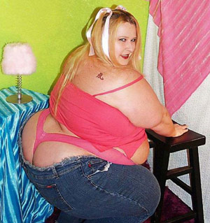

«Кто достоин, кто чего стоит»
Футболист Купецков
Закончился розыгрыш Кубка Колотиловки (Мамин Сибиряк). Самое время подвести первые итоги, взглянуть на статистический расклад и просто погрузиться в мир цифири. Предлагаем вашему вниманию показатели всех участников минувшего турнира в различных номинациях.
Bender Selection
Место: 1Победы-ничьи-поражения=очки: 7-0-0=21
Забитые голы – пропущенные голы: 30-5
Самый результативный футболист: Антон Главин (8 голов)
Самый грубый футболист: Раймондс Пленцис (2 жёлтых карточки)
Хамских баллов в Трофее Громилы: 7
Главное достижение в Кубке колотиловки: Собственно, победа в турнире. В четвёртый раз при том, что ни одной другой команде не удавалось завоевать главный трофей даже дважды.
Лучшая цитата тренера: «Группа нам подобралась достойная. Молодежь в битвах с Латушкой и Ромишем наверняка приобретет полезный опыт. Главное в такой компании - обойтись без травм, которых, впрочем, учитывая характер соперников, избежать будет достаточно сложно».
Результат в лиге: Пока «Бендер» лидирует в лиге V.46 и в последнем туре будет играть с главным конкурентом. Даже в случае ничьей команда сохранит за собой первое место.
MO4A HA nEPEnPABE
Место: 2Победы-ничьи-поражения=очки: 4-1-2=13
Забитые голы – пропущенные голы: 10-10
Самый результативный футболист: Ян-Мелис Спаан, Полат Текеш, Торбен Рюкауф (все – по 2 гола)
Самый грубый футболист: Йедрек Млинчак (3 жёлтых карточки)
Хамских баллов в Трофее Громилы: 7
Главное достижение в Кубке колотиловки: Выход в плей-офф, несмотря на выход дисквалифицированного Млинчака на поле. Победа в двух подряд стыковых матчах над крепкими соперниками. Открытая игра в финале против «Бендера». Серебро.
Лучшая цитата тренера: «Можно забивать по 530 голов в матче сомнительного турнирного значения и вспоминать Бородинское сражение и былые победы, почесывая творожок. А можно, усыпив бдительного соперника по все правилам трактата "Йоу Ю Чжон", вести борьбу за отличные призы™ и помахивать павиановой красно-мозолистой задницей перед лицом опасности и назадачливых конкурентов».
Результат в лиге: Шестое или пятое место в лиге V.224. «Моче» предстоит стыковой матч, по всей видимости – с ботом, ибо в последнем туре команда проведёт поединок за 5-е место с главным конкурентом, который, мягко говоря, не впечатляет.
LLIKypKa oT con/Iu
Место: 3Победы-ничьи-поражения=очки: 4-0-3=12
Забитые голы – пропущенные голы: 13-16
Самый результативный футболист: Алин Ванатору (5 голов)
Самый грубый футболист: Алин Ванатору, Зигмунт Стащиньски, Борис Лигерс (все – по 2 жёлтых карточки)
Хамских баллов в Трофее Громилы: 12
Главное достижение в Кубке колотиловки: «Шкурка», заняв последнее место в дебютном Кубке колотиловки, уже в следующем сезоне выиграла бронзовые медали. Пример подопечных Марко Фассари доказывает, что можно из грязи в князи, после чего всё на мази. Отметим и тот факт, что все три поражения клубу нанёс чемпион турнира, остальные четыре встречи «сопляки» выиграли.
Лучшая цитата тренера: «Играть с полуосновным составом "выборных" нам пока не под силу. Любой игрок "основы" нашего соперника или даже ее половинки стоит гораздо дороже, чем вся наша команда вместе взятая, а это о чем-то да говорит. Хотелось продемонстрировать свою силу на едва почувствовавших вкус мяча новичках? Ну что ж, Монтанья, тебе это в полной мере удалось, раскатал нас аки Казахстан новозеландцев в хоккей без шайбы».
Результат в лиге: Безоговорочное первое место в лиге VI.830, где боты сдулись уж слишком быстро.
FC MEKAY
Место: 4Победы-ничьи-поражения=очки: 4-1-2=13
Забитые голы – пропущенные голы: 9-3
Самый результативный футболист: Яннис Георгусопулос и Мартин Дельгадо (по 2 гола)
Самый грубый футболист: Эдди Ионико, Герхарт Хайнес-Мотес, Хавьер Хаймбухнер (все – по 2 жёлтых карточки)
Хамских баллов в Трофее Громилы: 12
Главное достижение в Кубке колотиловки: «Мекай» второй год подряд занимает четвёртое место. На сей раз команда может занести себе в актив прекрасную игру на групповом этапе, который «кхе-кхе» прошёл без поражений. Занял первое место в группе Щ, после чего ёбнул коллегу по оборонительным капканам из «Да Бойз» в плей-офф.
Лучшая цитата тренера: «Сегодня был сломлен соперник Кикса. У них не было шансов. Даже теоретических. Но команда эта мне нравится. Молодцы они. Вроде ещё сосунки совсем, но борятся достойно. Думаю через лет 15-20 из них может получится что-нибудь толковое. А пока поборетесь за говно и мочу».
Результат в лиге: Четвёртое либо пятое место в лиге V.62 – в последнем туре решится, предстоит ли «Мекаю» играть стыковой матч, хотя команде к этому не привыкать. Дело в том, что «пфекай» занимал пятое место в лиге в пяти из шести сезонов своего существования, но вылета всякий раз избегал.
FC Spartak Seattle
Место: 5Победы-ничьи-поражения=очки: 4-1-1=13
Забитые голы – пропущенные голы: 17-9
Самый результативный футболист: Ари Лемпинен (3 гола)
Самый грубый футболист: Ари Лемпинен и Хуан Хосе Марин (2 жёлтых карточки)
Хамских баллов в Трофее Громилы: 11
Главное достижение в Кубке колотиловки: Безоговорочное первое место в группе Ю. Правда, в плей-офф спартаковцы получили по шапке уже в первом матче, разочаровав своих поклонников.
Лучшая цитата тренера: «Признаюсь откровенно, во время жеребьевки я думал о шкалике, купленном на обеде».
Результат в лиге: 4 место в лиге V.145.
FC Marshal Riga
Место: 6Победы-ничьи-поражения=очки: 3-0-3=9
Забитые голы – пропущенные голы: 13-10
Самый результативный футболист: Франциско Камарго (4 гола)
Самый грубый футболист: Алари Палк и Раулс Калниекс (2 жёлтых карточки)
Хамских баллов в Трофее Громилы: 14
Главное достижение в Кубке колотиловки: Первое место в группе Э. Однако затем «маршаки» бесславно уступили «Шкурке от сопли». Кроме того, команда заняла 2-е место в Трофее Громилы.
Лучшая цитата тренера: «Прокачка Пркачина. Как следствие - крушение Крушчича. Как следствие - ярость Яромира. Но потом будет филе из филе, а затем - тушка Латушки».
Результат в лиге: Третье или четвертое место в лиге V.230. Отметим, что у «маршаков» есть шанс впервые в истории завоевать бронзу.
FC Da Boyz
Место: 7Победы-ничьи-поражения=очки: 2-2-2=8
Забитые голы – пропущенные голы: 10-7
Самый результативный футболист: Элран Тадмор (3 гола)
Самый грубый футболист: 5 человек получили по одной жёлтой карточке.
Хамских баллов в Трофее Громилы: 10
Главное достижение в Кубке колотиловки: В ключевом матче за выход из группы Ю против «Кокашкиных каникул» команда продемонстрировала образец игры на контратаках и заслуженно выиграла в гостях со счётом 2:1.
Лучшая цитата тренера: «Впрочем, не далее как в прошлом сезоне эта команда («Маршал» - прим. редакции) обещала порвать нас на грелки, а что из этого вышло, мы все прекрасно помним. Вспоминается народная китайская мудрость про то, что у футболистов, которые не помнят прошлого, нет будущего».
Результат в лиге: 5 место в лиге V.173 и, судя по всему, стыковой матч с ботом, выигранный по всем статьям. Благо, опыт есть.
Imanta Beavers
Место: 8Победы-ничьи-поражения=очки: 2-0-4=6
Забитые голы – пропущенные голы: 5-18
Самый результативный футболист: Антон Бобёр(!) (2 гола)
Самый грубый футболист: Жерарду Пенафиел (3 жёлтых карточки)
Хамских баллов в Трофее Громилы: 15
Главное достижение в Кубке колотиловки: В дебютном розыгрыше Кубка колотиловки «бобры» с ходу пробились в плей-офф, одержав в рамках группы Э сенсационную победу над «Маршалом» (1:0).
Лучшая цитата тренера: «Хлеб - всему голова! Опять двойка! Мишки в лесу!.... Опять проебали, на этот раз с крупным счётом».
Результат в лиге: 1 место в лиге VI.1023. Справедливости ради стоит отметить, что «бобры» сражались исключительно с ботами.
KOKALLIKuHbI KAHuKy/IbI
Место: 9Победы-ничьи-поражения=очки: 2-1-3=7
Забитые голы – пропущенные голы: 14-13
Самый результативный футболист: Фредерик Дриди (3 гола)
Самый грубый футболист: Андерс Торне и Николай Димитров (2 жёлтых карточки)
Хамских баллов в Трофее Громилы: 7
Главное достижение в Кубке колотиловки: Насколько помнят эксперты и Аксель Вартанян, никогда ещё действующий чемпион Кубка колотиловки не выступал в следующем после триумфального сезоне настолько бездарно. Пусть это и будет «достижением» коках.
Лучшая цитата тренера: (сразу после жеребьёвки) «Сенсации обязательно будут, не надо заранее приписывать кому-то неудачу или громкий успех, а то можно обкакаться на людях».
Результат в лиге: «Кокашки» играют в той же лиге V.62, что и «Мекай». Турнирная ситуация крайне запутанная, команда может финишировать и первой, и даже четвёртой. Однако даже второе место будет лучшим результатом в истории «коках».
FC Zivju Fileja
Место: 10Победы-ничьи-поражения=очки: 2-0-4=6
Забитые голы – пропущенные голы: 8-12
Самый результативный футболист: Квентин Бохез (2 гола)
Самый грубый футболист: Макар Камалетдинов (2 жёлтых карточки)
Хамских баллов в Трофее Громилы: 6
Главное достижение в Кубке колотиловки: В 1/2 жабр «рыбники» разнесли «Vot tak smrad» с результатом 3:1, что многими было расценено, как сенсация.
Лучшая цитата тренера: «Вот вам ваши "филе примерит жабры", вот вам ваши херовы котировки 2.00. И что в итоге? Смрад отправили в дежавю, молодёжь на тренировку, а недавний школьник Лёня Кикилевич забил гол недели. Нюхайте».
Результат в лиге:
FC Kixa
Место: 11Победы-ничьи-поражения=очки: 1-0-6=3
Забитые голы – пропущенные голы: 5-16
Самый результативный футболист: Щчепан Крыньски (2 гола)
Самый грубый футболист: Рафаэль Саэнс Камачо (1 красная карточка и 3 жёлтых) (!!!)
Хамских баллов в Трофее Громилы: 13 Главное достижение в Кубке колотиловки: Дебют команды в турнире получился двояким. Единственная победа «кексов» была технической, зато были настоящие битвы с «Мекаем» и «Мочой» на групповом этапе. Кроме того, «Кикса» заняла третье место в зачёте Трофея Громилы.
Лучшая цитата тренера: (о триумфе «Мочи» в первом матче группы) «Победа на классе. Прессинг помогал нам лишь до первого гола, а потом выдохлись ребята и рассыпались. Купленный нами судья не отработал на сто процентов. Он удалил всего лишь одного соперника, а договаривались на трех и два пенальти. Хуйло, блядь»,
Результат в лиге: В последнем туре лиги VI.204 «кексы» играют с клубом «Kveps». В случае победы команда займёт второе место, при любом другом результате останется третьей.
Vot tak smrad
Место: 12Победы-ничьи-поражения=очки: 1-0-6=3
Забитые голы – пропущенные голы: 3-19
Самый результативный футболист: Ян Богебьерг, Герд Клаас, Эвальд Хеллеманс (по 2 гола)
Самый грубый футболист: Ян Богебьерг (2 жёлтых карточки)
Хамских баллов в Трофее Громилы: 8
Главное достижение в Кубке колотиловки: Новое название "}I{A6PbI COgOMuTA", собственноручно и придуманное.
Лучшая цитата тренера: «Арга, щуссель с капрост! Валдух плесаны уфэрга зуждарба. Ахмю саюк глярг. А там уже и легионеры из "Шилуте" к нам подоспеют и пи-издец, будем рвать и метать».
Результат в лиге: Судя по всему, новоиспечённые «жабры» финишируют первыми в лиге VI.198. За тур до финиша команда лидирует в турнирной табуле, на очко опережая «FK Cilaverts».
При подготовке материала использованы данные с сайта http://molotilovka.eclub.lv/mamin, четверть отборных бобов себестоимостью в два лата, кружечка чаю, и уже нахуй 5:47 утра. Ф песду этот футбол...
